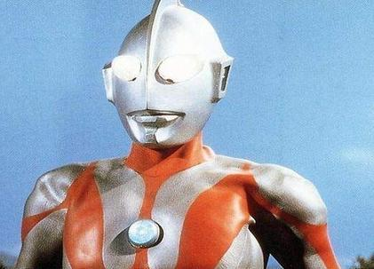
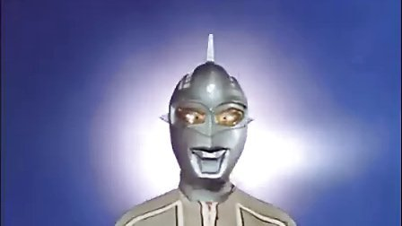
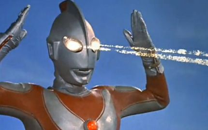
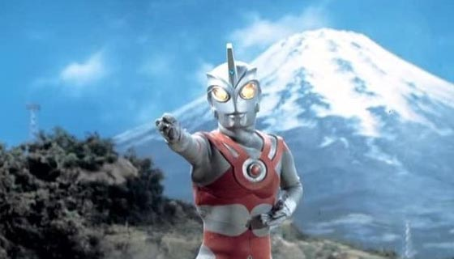
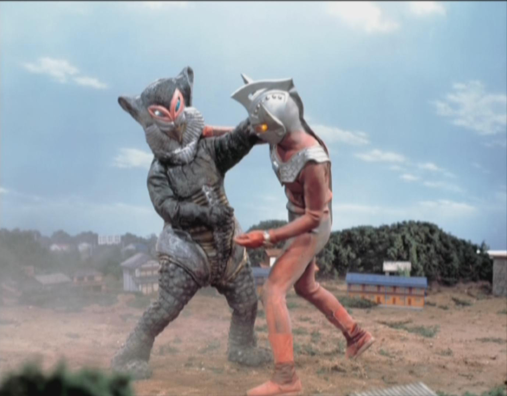
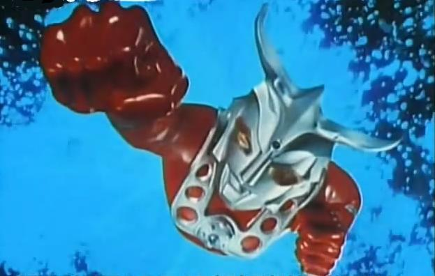

圆谷特摄剧《初代奥特曼》中的主角,第一个奥特曼。
初代奥特曼在追逐怪兽Bemura至地球时，不慎引致 科学特搜队的早田队员机毁人亡。为了补偿他的过失，初代奥特曼跟早田融合为一体，令他重生。从此，早田便负起保卫地球的责任；每当有需要时，他便使用其变身胶囊变身成初代奥特曼。 初代奥特曼是来自M78星云的光之国的宇宙人，隶属宇宙警备队，负责卫护宇宙和平。他的能量来自太阳；因此，他在地球上活动的时间很有限，祗有三分钟。当其能量将尽时，胸间的警报器便会响亮，由蓝色转为红色并闪烁。三分钟过后，初代奥特曼将丧失其能量。
赛文·奥特曼原本是M78星云340号恒星观测员，为制作轨道图而来到了地球，留在地球上进行着与大怪兽和宇宙侵略者的战斗。赛文·奥特曼的对手都是些恐怖的宇宙怪兽和高智能的宇宙人以及战斗型宇宙机器人，所以赛文·奥特曼动作灵活，并擅长智能战术。在所有奥特曼作品中，赛文·奥特曼制作水平具有一定的代表性。尤其是特技制作和故事内容等各方面都比以往有极大创新。
1971年4月2日出品的科幻特摄片。讲述杰克·奥特曼担负着保卫地球的使命而来到了地球。正在那时，为了救护少年和小狗的乡秀树，惨遭怪兽伤害而牺牲了。这时杰克被他的勇气所感动，就借助乡秀树的身躯，和他合为一体，与怪兽作战，并且，杰克·奥特曼不同于其他奥特曼的一点是，他没有变身法宝，靠意念变身。或当乡有生命危险的时候，会直接变身为杰克。
奥特六兄弟中的第五个，“昭和系”奥特曼，奥特兄弟中掌握光线最多的奥特曼，有“光线之王”的称号。
泰罗·奥特曼，讲述的是东京港突然出现了超级怪兽度林卡。青年东光太郎挺身而出，孤身奋战击败了怪兽，得到宇宙科学警备队重视，成为ZAT警备队一员。再一次与怪兽战斗中,献出了生命，这时奥特之母将泰罗的生命给予了东光太郎。奥特之母和奥特兄弟们陆续登场,表现了现代神话故事的魅力所在
1974年4月12日在日本首播的电视剧，90年代奥特曼系列正式引进中国。雷欧·奥特曼是来自狮子座L77行星的战士，由于原来所居住的母星遭到马格马星人的侵略毁灭而到了地球，他受诸星团之托加入宇宙巡逻队MAC与无数觊觎地球的怪兽及宇宙人战斗，他拥有超强的格斗能力，被誉为昭和奥特曼中的格斗王。同时光线技能也一样出色（其实本身设定格斗为主，但后来为了挽救收视率而被迫加入多种光线）。《雷欧·奥特曼》于1995年3月8日在上海东方电视台首播，再一次掀起少年儿童争看的热潮，在中国大陆刮起一阵阵强烈的无法阻挡的雷欧奥特曼旋风热潮，是一部伴随和见证了两代人的成长的经典回忆奥特曼系列作品之一。
